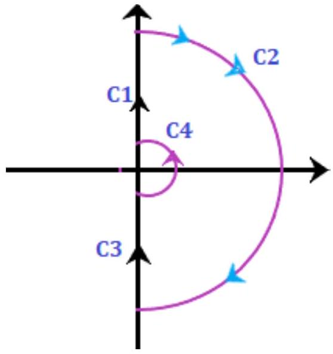

Unit-8: Frequency-Response Analysis & Bode Plot
Stability analysis to draw the Nyquist plot
Here, we will discuss the steps that will help in the stability analysis to draw the Nyquist plot.
-
Determining the poles and zeroes
From the given transfer function, we need to determine the poles and zeroes to check the valid points. -
Selecting a Nyquist plot
We need to select a Nyquist plot that should enclose all the poles and zeroes present on the right-half of the s-plane except the singular points. The singular points are considered as the points lying on the imaginary axis. Hence, these points are avoided.
If the transfer function has a pole at zero or origin, the contour encloses all the poles and zeroes except the origin.
If there are no poles on the imaginary axis, the contour will appear as: Both the avoided points (origin and imaginary) in the contour are shown below: For mapping, the contour needs to be analytical. Let's first discuss about mapping. -
Mapping a contour
A singular point (point on the imaginary axis) is not analytical. Hence, it is generally avoided. The Nyquist contour is mapped to determine the encirclement of the point -1 + j0. The contour is drawn based on the transfer function is G(s)H(s).
There are four sections C1, C2, C3, and C4. The Nyquist criterion pot is divided into four sections so that the process can be easily carried out section wise. At last, all the sections are combined to produce the desired Nyquist plot. Let the four sections be:  The order of these sections is somewhat similar as shown above. -
Range for the first section C1
We know that the Nyquist range is from -infinity to infinity, and the value of $\omega$ in section C1 ranges from 0 to infinity. The contour will be drawn in G(s)H(s) plane with respect to the above range, and it will be the locus plot of $G(j\omega)H(j\omega)$.
We can use various methods of mapping the first section C1, such as sketching the locus from the given transfer function, finding the frequency by equating the real and imaginary parts to zero, using the polar plot method (type and order of the system), and separating the magnitude and the phase.. -
Range for the second section C2
The second section is generally of infinite radius. Here, it is a semi-circle of infinite radius. The range of the second section is from -90 degrees to +90 degrees. It can be obtained by:$$ s = \lim_{R \rightarrow \infty} Re^{j\theta} $$$$ \theta = +\frac{\pi}{2} \text{ to } -\frac{\pi}{2} $$If the transfer function is in the form $G(s)H(s) = K(1 + sT)/[s(1 + sT1)(1 + sT2)]$, the term $(1 + sT)$ can be assumed as $sT$. The value of the transfer function at the specific value of theta will be:$$ \text{At } \theta = +\frac{\pi}{2}, \quad G(s)H(s) = 0 \cdot e^{-j\frac{\pi}{2}(n-m)} $$$$ \text{At } \theta = -\frac{\pi}{2}, \quad G(s)H(s) = 0 \cdot e^{+j\frac{\pi}{2}(n-m)} $$Where, N is the number of poles and m is the number of zeroes. The value of n is greater than or equal to m. -
Range for the second section C3
In the third section C3, the value of $\omega$ ranges from -infinity to zero. The locus of the third section is just the inverse of the polar plot of $G(j\omega)H(j\omega)$. We can also say that it is the inverse of the first section. The resulted plot will be the mirror image of the polar with respect to the real axis. -
Range for the second section C4
The argument of the forth section varies from- 90 degrees to 90 degrees. The Nyquist contour of this section has a semicircle of zero radii. The mapping of the section C4 is given by the condition:$$ s = \lim_{r \rightarrow 0} re^{j\theta} $$$$ \theta = -\frac{\pi}{2} \text{ to } +\frac{\pi}{2} $$If the transfer function is in the form $G(s)H(s) = K(1 + sT)/[s^y(1 + sT1)(1 + sT2)]$, the term $(1 + sT)$ can be assumed as 1. The value of the transfer function at the specific value of theta will be:$$ \text{At } \theta = +\frac{\pi}{2}, \quad G(s)H(s) = \infty \cdot e^{-j\frac{\pi}{2}y} $$$$ \text{At } \theta = -\frac{\pi}{2}, \quad G(s)H(s) = \infty \cdot e^{+j\frac{\pi}{2}y} $$Where, Y is the number of poles (at the origin).Note: If there are no poles at the origin of the Nyquist plot, the section C4 will be absent.
Let's discuss an example of the Nyquist plot for better understanding. We will follow the steps discussed above.
Examples
Consider the below example:
Example: Draw the Nyquist plot for the system whose open loop transfer function is given by:
Also determine the range of K for which the system is stable.
Solution: The transfer function is given by:
Step 1: Determining the poles and zeroes.
Since, the transfer function has no numerator in terms of s, there are no zeroes present in the function. There are only three poles (at s=0, s=-2, s=-10).
The open loop function has a pole at the origin, which is shown below:
Now, we will perform the mapping of all four sections separately. At last, all four sections will be combined to produce the desired results.
Step 2: Mapping of section C1
The value of $\omega$ in section C1 ranges from $0^+$ to infinity. The contour will be drawn in G(s)H(s) plane with respect to the above range will be the locus plot of $G(j\omega)H(j\omega)$.
The corresponding imaginary term will be 0 and the resulted frequency will be the crossover phase frequency, which is given by:
$\omega(1 - 0.05\omega^2) = 0$
$1 - 0.05\omega^2 = 0 \quad (\text{since } \omega \neq 0 \text{ on C1})$
$\omega^2 = 1/0.05 = 20$
$\omega = \sqrt{20} \approx 4.472$ radians/second = crossover phase frequency
Now, we will put the value of the above frequency in the real part of the $G(j\omega)H(j\omega)$, which is given by:
At $\omega^2 = 20$, the expression becomes:
From the given transfer function, we can easily determine that the system is of type 1 and order 3.
The polar plot will start at $ \infty \angle -90^\circ $ (as $\omega \to 0^+$), crosses the real axis at $-0.00417K$ (when $\omega \approx 4.472$), and end at $0 \angle -270^\circ$ (as $\omega \to \infty$), as shown below:
Step 3: Mapping of section C2
The range of the second section is from +90 degrees to -90 degrees. It can be obtained by:
If the transfer function is in the form $G(s)H(s) = 0.05K/[s(1 + 0.5s)(1 + 0.1s)]$, for large $s$, the term $(1 + sT)$ can be assumed as $sT$. It is given by:
As $R \to \infty$, $|G(s)H(s)| \to 0$.
The value of the transfer function at the specific value of theta will be:
At $\theta = +\pi/2$, Angle = $-3(\pi/2) = -270^\circ$
At $\theta = -\pi/2$, Angle = $-3(-\pi/2) = +270^\circ$
Thus, the section C2 varying from -270 degrees to 270 degrees will appear as the plane shown in the below image:

Section C2 in s-plane
Mapping of section C2 in G(s)H(s) plane
Step 4: Mapping of section C3
We know that the section C3 is simply the inverse (mirror image across real axis) of section C1. Thus, the locus plot of the section C3 will be the increase on the real axis at the same point, as shown below:

Step 5: Mapping of section C4
Let's plot the C4 section of the Nyquist plot.
The argument of the fourth section varies from -90 degrees to 90 degrees. The Nyquist contour of this section has a semicircle of zero radii. The condition gives the mapping of the section C4:
If the transfer function is in the form $G(s)H(s) = 0.05K/[s(1 + 0.5s)(1 + 0.1s)]$, for small $s$ (near origin), the term $(1 + sT)$ can be assumed as 1. It is given by:
As $r \to 0$, $|G(s)H(s)| \to \infty$.
The value of the transfer function at the specific value of theta will be:
At $\theta = +\pi/2$, Angle = $-\theta = -\pi/2 = -90^\circ$
At $\theta = -\pi/2$, Angle = $-\theta = -(-\pi/2) = +\pi/2 = +90^\circ$
We can say that the section C4 is mapped in the s-plane as a circular arc of infinite radius (in G(s)H(s) plane). The locus is shown below:
Mapping of section C4 in G(s)H(s) plane
Step 6: Stability analysis
We will find the value of K when the contour passes through the point (-1 + j0).
From Step 2, the crossing point on the real axis is $-0.00417K$.
Set this equal to -1:
$-0.00417K = -1$
The limiting value of K will be:
$K = 1/0.00417$
$K \approx 239.8 \approx 240$
Step 7: Complete Nyquist plot
The complete Nyquist plot after combining all the above four sections are shown below:
240." class="content-image">We will find the stability at the two values of K.
K< 240
When the value of K is less than 240, the contour does not cross the real axis to the left of -1, and the point -1 + j0 is not encircled. There are no open-loop poles on the right half of the s-plane (P=0). According to the Nyquist criterion (N = P - Z), the number of encirclements N must be 0 for stability (since P=0), which means Z=0 (no closed-loop poles in RHP). Hence, the system at this value of K is stable.
K>240
When the value of K is greater than 240, the contour crosses the real axis to the left of -1, and the point -1 + j0 is encircled two times in the clockwise direction (N=-2). There are no open-loop poles on the right half of the s-plane (P=0). According to the Nyquist criterion (N = P - Z), we have -2 = 0 - Z, which implies Z=2. This means there are two closed-loop poles in the right-half s-plane. Hence, the system at this value of K is unstable.
Thus, for the stability of the given transfer function, the value of K is $0 < K < 240$.